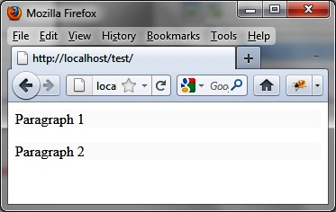
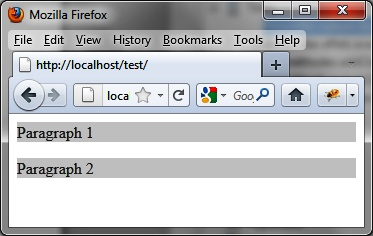
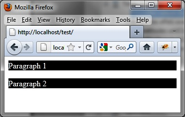

{% include JB/setup %}
{% raw %}
<div>
<div class="book" title="The animate () method Improved by jQuery UI"><div class="book"><div class="book"><div class="book"><h1 class="title2"><a id="the_animate_open_parenthesis_close_paren" class="calibre1"></a>The animate () method Improved by jQuery UI</h1></div></div></div><p class="calibre7">The jQuery <code class="literal">animate ()</code> method,
    which allows visual effects by changing CSS properties, has a number of
    limitations on CSS properties associated with the <code class="literal">color</code> and <code class="literal">easing</code> options (setting progression in the
    effect). Thanks to jQuery UI, it is possible to <span class="firstname">implement</span> improved effects.</p><div class="book" title="CSS Properties for Managing Colors"><div class="book"><div class="book"><div class="book"><h2 class="title5"><a id="css_properties_for_managing_colors" class="calibre1"></a>CSS Properties for Managing Colors</h2></div></div></div><p class="calibre7">Unlike the jQuery <code class="literal">animate ()</code>
      method, jQuery UI allows the use of color CSS properties such as
      <code class="literal">color</code>, <code class="literal">background-color</code>, <code class="literal">border-color</code>, etc.</p><p class="calibre7">In the following example, we want to create an effect to gradually
      change the background and character colors of two paragraphs: initially
      in black letters on a white background (<a class="ulink" href="ch14s03.html#the_two_paragraphs_before_applying_the_e" title="Figure 14-13. The two paragraphs before applying the effect">Figure 14-13</a>), the elements
      gradually change into white characters (<code class="literal">color:
      "white"</code>) on a black background (<code class="literal">"background-color": "black"</code>). <a class="ulink" href="ch14s03.html#changing_colors_with_the_animate_open_pa" title="Figure 14-14. Changing colors with the animate () method: intermediate step">Figure 14-14</a> shows this effect
      in progress, and the final result is shown in <a class="ulink" href="ch14s03.html#changing_colors_with_the_animate_ope" title="Figure 14-15. Changing colors with the animate () method: final result">Figure 14-15</a>:</p><a id="I_programlisting14_d1e14868" class="firstname"></a><pre class="programlisting">&lt;script src = jquery.js&gt;&lt;/script&gt;
&lt;script src = jqueryui/js/jquery-ui-1.8.16.custom.min.js&gt;&lt;/script&gt;

&lt;link rel=stylesheet type=text/css
      href=jqueryui/css/smoothness/jquery-ui-1.8.16.custom.css /&gt;

&lt;p&gt; Paragraph 1 &lt;/p&gt;
&lt;p&gt; Paragraph 2 &lt;/p&gt;

&lt;script&gt;

<span class="firstname"><strong class="userinput">$("p").animate ({</strong></span>
  <span class="firstname"><strong class="userinput">"background-color" : "black",</strong></span>
  <span class="firstname"><strong class="userinput">color : "white"</strong></span>
<span class="firstname"><strong class="userinput">}, 10000);</strong></span>

&lt;/script&gt;</pre><div class="book"><div class="figure"><a id="the_two_paragraphs_before_applying_the_e" class="firstname"></a><div class="book"><div class="book"><a id="I_mediaobject14_d1e14885" class="firstname"></a></div></div><p class="title4">Figure 14-13. The two paragraphs before applying the effect</p></div></div><div class="book"><div class="figure"><a id="changing_colors_with_the_animate_open_pa" class="firstname"></a><div class="book"><div class="book"><a id="I_mediaobject14_d1e14893" class="firstname"></a></div></div><p class="title4">Figure 14-14. Changing colors with the animate () method: intermediate
        step</p></div></div><div class="book"><div class="figure"><a id="changing_colors_with_the_animate_ope" class="firstname"></a><div class="book"><div class="book"><a id="I_mediaobject14_d1e14901" class="firstname"></a></div></div><p class="title4">Figure 14-15. Changing colors with the animate () method: final
        result</p></div></div></div><div class="book" title="New Values for the easing Option"><div class="book"><div class="book"><div class="book"><h2 class="title5"><a id="new_values_for_the_easing_option" class="calibre1"></a>New Values for the easing Option</h2></div></div></div><p class="calibre7">The jQuery <code class="literal">animate ()</code> method
      supports the <code class="literal">linear</code> and <code class="literal">swing</code> values for the <code class="literal">easing</code> option. Remember that this option
      specifies how to progress into the effect: faster at first, faster at
      the end, and so on.</p><p class="calibre7">The new values of the <code class="literal">easing</code>
      option are shown in Figures <a class="ulink" href="ch14s04.html#values_for_the_easing_option_open_parent" title="Figure 14-16. Values for the easing option (1)">14-16</a> and <a class="ulink" href="ch14s04.html#values_for_the_easing_option_open_pa" title="Figure 14-17. Values for the easing option (2)">14-17</a> provided on the jQuery UI official
      site (<a class="ulink" href="http://jqueryui.com/docs/effect/easing">http://jqueryui.com/docs/effect/easing</a>). The
      curve allows you to view how to progress in the effect.</p></div></div></div>

{% endraw %}

